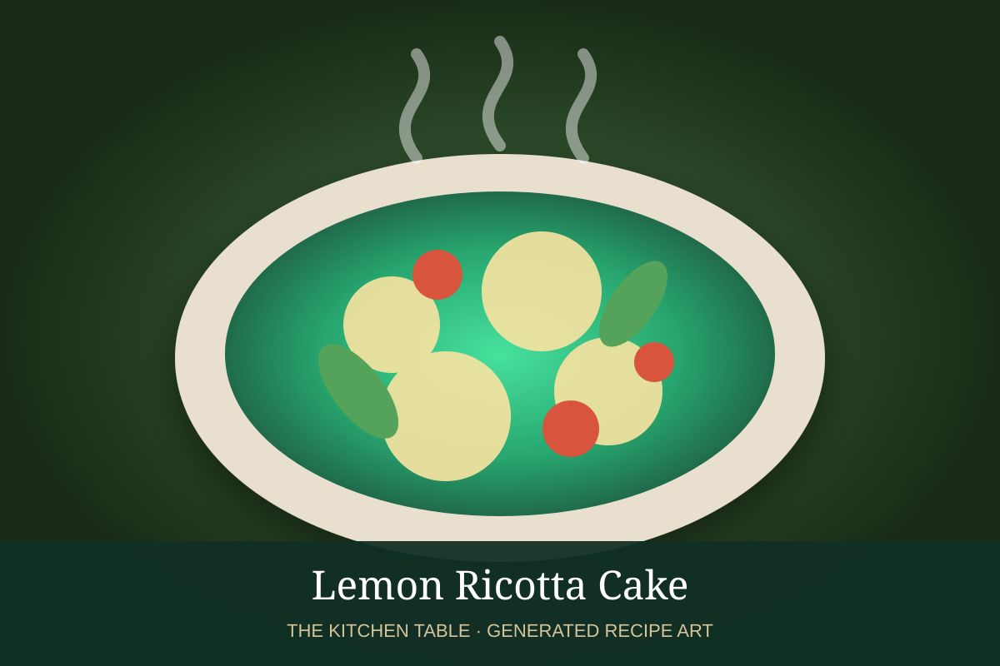

← Back to all recipes
DESSERT · ITALIAN
Lemon Ricotta Cake
Moist, tender ricotta cake brightened with fresh lemon zest, lemon juice, and vanilla.
1 hr 10 minServes 8 to 10

Photo: Wikimedia Commons
Ingredients
- 1 1/2 cups all-purpose flour
- 2 tsp baking powder
- 1/2 tsp salt
- 1/2 cup unsalted butter, softened
- 1 cup granulated sugar
- 15 oz whole-milk ricotta
- 3 large eggs
- 2 tbsp finely grated lemon zest
- 3 tbsp fresh lemon juice
- 1 tsp vanilla extract
- Powdered sugar, for serving
Preparation
- Heat oven to 350°F. Grease and line a 9-inch round cake pan.
- Whisk flour, baking powder, and salt.
- Beat butter and sugar until pale and fluffy. Beat in ricotta until smooth, then eggs one at a time.
- Mix in lemon zest, lemon juice, and vanilla. Fold in dry ingredients just until incorporated.
- Bake 45 to 55 minutes until golden and a tester comes out clean. Cool, then dust with powdered sugar.